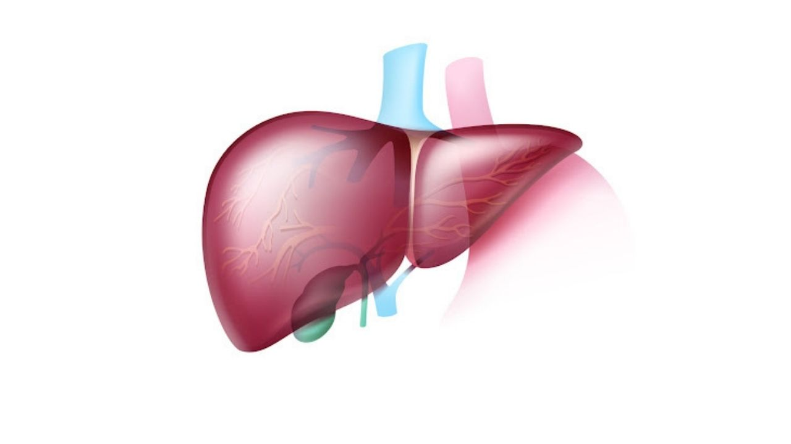

The Liver
The liver is an organ about the size of a football. It sits just under your rib cage on the right side of your abdomen. The liver is essential for digesting food and ridding your body of toxic substances. Liver disease can be inherited (genetic). Liver problems can also be caused by a variety of factors that damage the liver, such as viruses, alcohol use and obesity. Over time, conditions that damage the liver can lead to scarring (cirrhosis), which can lead to liver failure, a life-threatening condition. But early treatment may give the liver time to heal.
Symptoms Liver problems
Liver problems that can occur include fatty liver disease and cirrhosis. The liver and its cells — as seen through a microscope — change dramatically when a normal liver becomes fatty or cirrhotic. Liver disease doesn't always cause noticeable signs and symptoms. If signs and symptoms of liver disease do occur, they may include: Skin and eyes that appear yellowish (jaundice) Abdominal pain and swelling Swelling in the legs and ankles Itchy skin Dark urine color Pale stool color Chronic fatigue Nausea or vomiting Loss of appetite Tendency to bruise easily
When to see a doctor
Make an appointment with your doctor if you have any persistent signs or symptoms that worry you. Seek immediate medical attention if you have abdominal pain that is so severe that you can't stay still. More Information Liver disease care at Mayo Clinic Liver cysts: A cause of stomach pain?
Causes
Liver disease has many causes.Infection
Parasites and viruses can infect the liver, causing inflammation that reduces liver function. The viruses that cause liver damage can be spread through blood or semen, contaminated food or water, or close contact with a person who is infected. The most common types of liver infection are hepatitis viruses, including: Hepatitis A Hepatitis B Hepatitis C
Immune system abnormality
Diseases in which your immune system attacks certain parts of your body (autoimmune) can affect your liver. Examples of autoimmune liver diseases include: Autoimmune hepatitis Primary biliary cholangitis Primary sclerosing cholangitis.
Genetics
An abnormal gene inherited from one or both of your parents can cause various substances to build up in your liver, resulting in liver damage. Genetic liver diseases include: Hemochromatosis Wilson's disease Alpha-1 antitrypsin deficiency
Cancer and other growths
Examples include: Liver cancer Bile duct cancer Liver adenoma
Other
Additional, common causes of liver disease include: Chronic alcohol abuse Fat accumulation in the liver (nonalcoholic fatty liver disease) Certain prescription or over-the-counter medications Certain herbal compounds
Risk factors
Factors that may increase your risk of liver disease include: Heavy alcohol use Obesity Type 2 diabetes Tattoos or body piercings Injecting drugs using shared needles Blood transfusion before 1992 Exposure to other people's blood and body fluids Unprotected sex Exposure to certain chemicals or toxins Family history of liver disease
Complications
Complications of liver disease vary, depending on the cause of your liver problems. Untreated liver disease may progress to liver failure, a life-threatening condition.
Prevention
To prevent liver disease: Drink alcohol in moderation. For healthy adults, that means up to one drink a day for women and up to two drinks a day for men. Heavy or high-risk drinking is defined as more than eight drinks a week for women and more than 15 drinks a week for men. Avoid risky behavior. Use a condom during sex. If you choose to have tattoos or body piercings, be picky about cleanliness and safety when selecting a shop. Seek help if you use illicit intravenous drugs, and don't share needles to inject drugs. Get vaccinated. If you're at increased risk of contracting hepatitis or if you've already been infected with any form of the hepatitis virus, talk to your doctor about getting the hepatitis A and hepatitis B vaccines. Use medications wisely. Take prescription and nonprescription drugs only when needed and only in recommended doses. Don't mix medications and alcohol. Talk to your doctor before mixing herbal supplements or prescription or nonprescription drugs. Avoid contact with other people's blood and body fluids. Hepatitis viruses can be spread by accidental needle sticks or improper cleanup of blood or body fluids. Keep your food safe. Wash your hands thoroughly before eating or preparing foods. If traveling in a developing country, use bottled water to drink, wash your hands and brush your teeth. Take care with aerosol sprays. Make sure to use these products in a well-ventilated area, and wear a mask when spraying insecticides, fungicides, paint and other toxic chemicals. Always follow the manufacturer's instructions. Protect your skin. When using insecticides and other toxic chemicals, wear gloves, long sleeves, a hat and a mask so that chemicals aren't absorbed through your skin. Maintain a healthy weight. Obesity can cause nonalcoholic fatty liver disease. Return to previous page